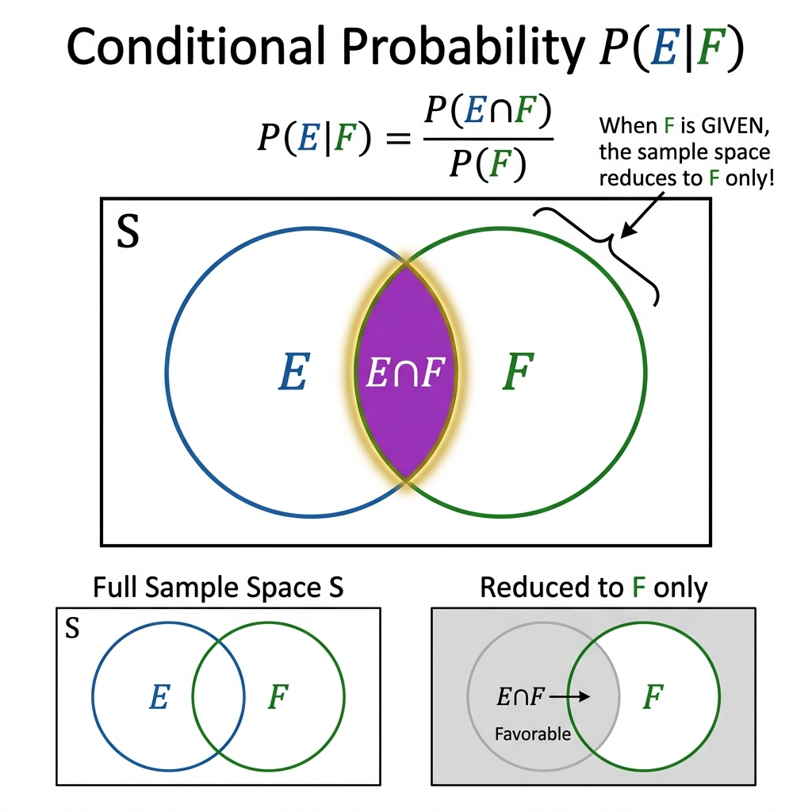
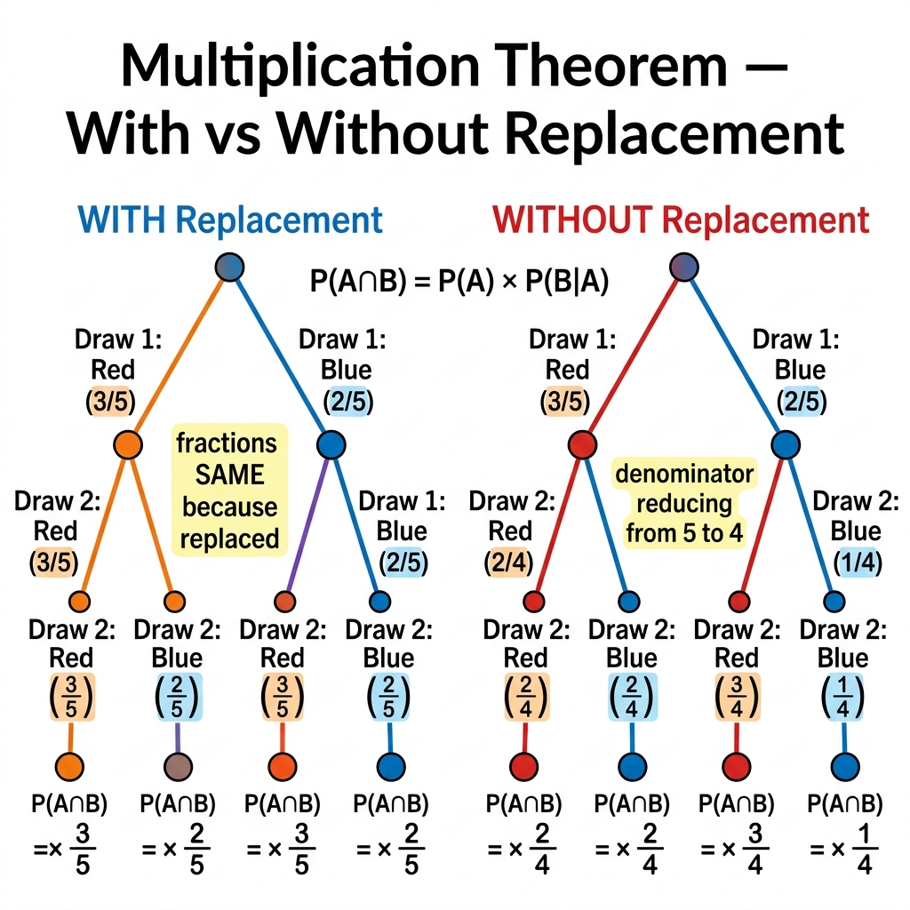
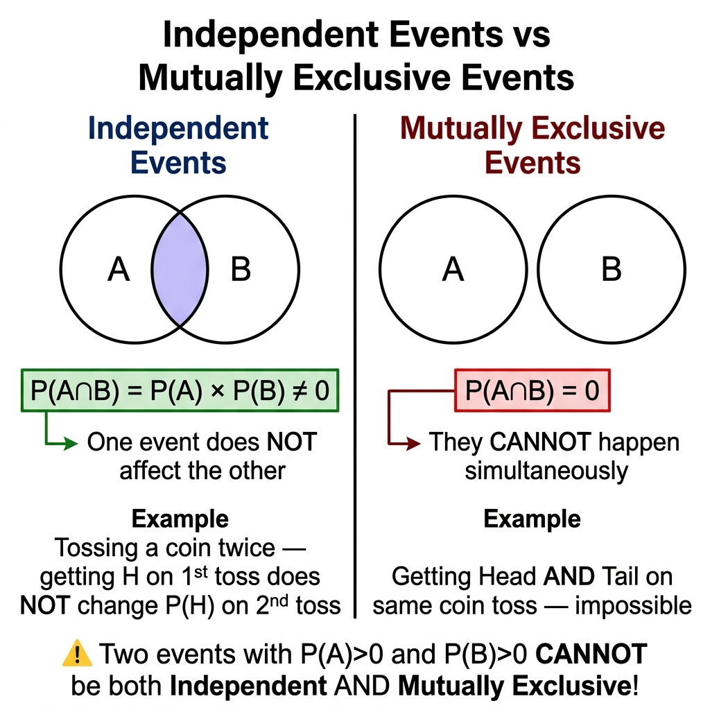
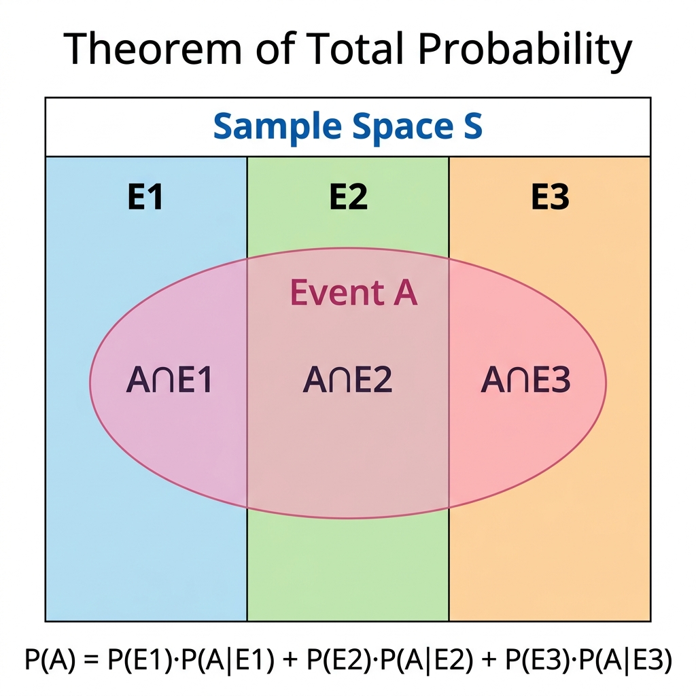
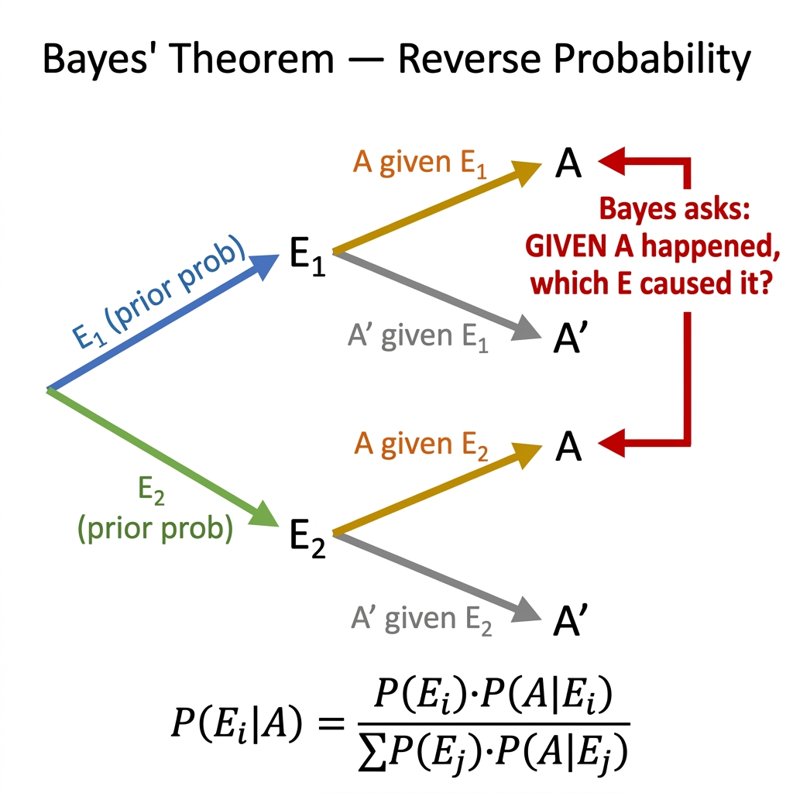
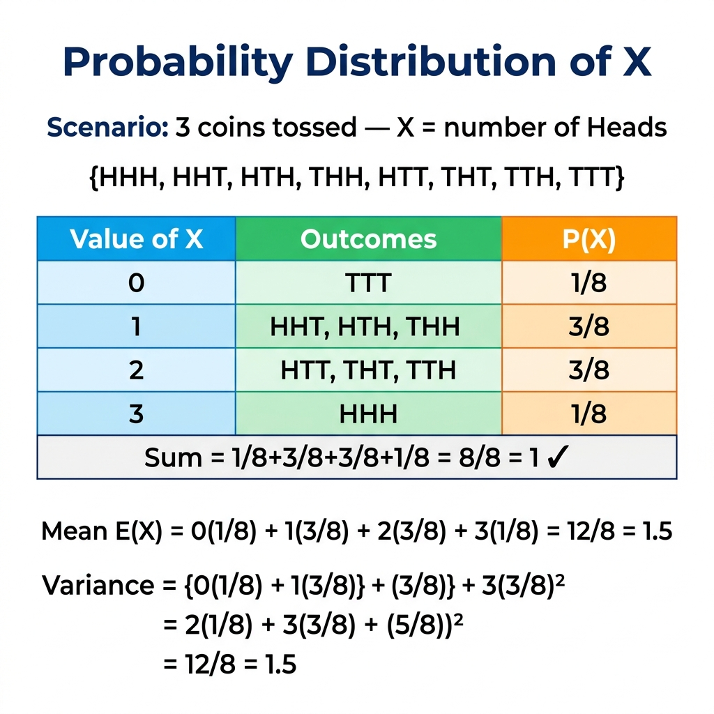
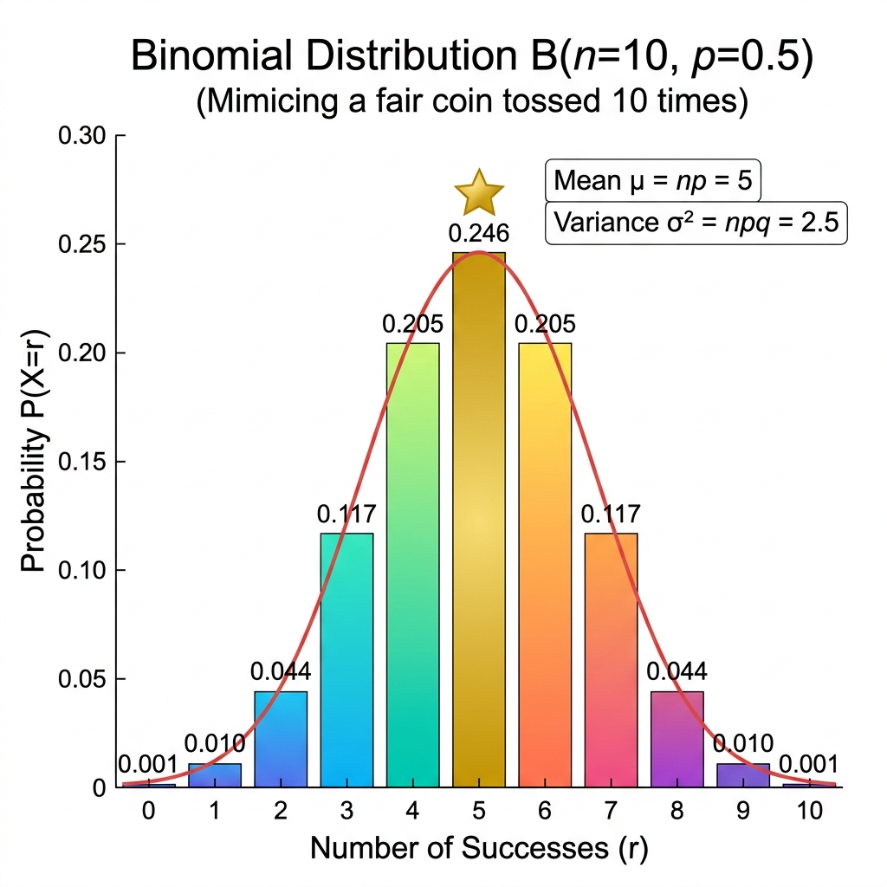

Vardaan Learning Institute
Class 12 Mathematics • Comprehensive Chapter Notes
🌐 vardaanlearning.com📞 9508841336
Chapter 13: Probability
Dear Student! Probability in Class 12 is a massive leap from Class 11. Here, we go beyond coin tosses to model real-world events — factory defect rates, disease testing accuracy, drug efficacy in clinical trials. Bayes' Theorem is the most famous 5/6-mark guarantee in CBSE Board Exams. The Binomial Distribution is the backbone of JEE Mains statistics. Master the logic deeply — this chapter is highly scoring once the concepts click!
Probability carries 8 marks in CBSE Board Exams (typically 1 MCQ + 1 short answer + 1 long answer of Bayes'/Binomial). For JEE Mains, expect 2–3 questions from Conditional Probability, Bayes', and Binomial Distribution. This is a guaranteed scoring chapter!
1. Review of Fundamentals (Class 11 Recap)
Essential Definitions
Sample Space (S): The set of ALL possible outcomes of a random experiment. e.g., for a die throw: $S = \{1,2,3,4,5,6\}$, $n(S)=6$.
Event: Any subset of the sample space.
Probability of Event E: $\displaystyle P(E) = \frac{n(E)}{n(S)}$ (for equally likely outcomes).
Complementary Event: $P(E') = 1 - P(E)$, where $E'$ (or $\bar{E}$) denotes "E does not occur".
Mutually Exclusive Events: Events that cannot occur simultaneously. $P(A \cap B) = 0$.
Exhaustive Events: Events whose union = entire sample space $S$.
Class 11 Formulas — Must Know
1. Addition Theorem (General):
$$P(A \cup B) = P(A) + P(B) - P(A \cap B)$$
2. For Mutually Exclusive events ($P(A \cap B)=0$):
$$P(A \cup B) = P(A) + P(B)$$
3. For Three Events:
$$P(A \cup B \cup C) = P(A)+P(B)+P(C)-P(A\cap B)-P(B\cap C)-P(A\cap C)+P(A\cap B\cap C)$$
4. De Morgan's Laws:
• "Neither A nor B": $P(A' \cap B') = 1 - P(A \cup B)$
• "Not A or not B": $P(A' \cup B') = 1 - P(A \cap B)$
Practice Problem 1 — Addition Theorem
Question: $P(A) = 0.6$, $P(B) = 0.5$, $P(A \cup B) = 0.8$. Find: (i) $P(A \cap B)$, (ii) $P(A \cap B')$, (iii) $P(\text{neither A nor B})$.
(i) From Addition Theorem: $P(A \cap B) = P(A)+P(B)-P(A \cup B) = 0.6+0.5-0.8 = \mathbf{0.3}$
(ii) $P(A \cap B') = P(A) - P(A \cap B) = 0.6 - 0.3 = \mathbf{0.3}$ [A occurs but B does not]
(iii) $P(A' \cap B') = 1 - P(A \cup B) = 1 - 0.8 = \mathbf{0.2}$
Practice Problem 2 — Three Events (JEE Level)
Question: For three events A, B, C: $P(A)=P(B)=P(C)=\frac{1}{4}$, $P(A \cap B)=P(B \cap C)=0$, $P(A \cap C)=\frac{1}{8}$. Find $P(A \cup B \cup C)$.
$P(A \cap B \cap C) \leq P(A \cap B) = 0$, so $P(A \cap B \cap C) = 0$.
$P(A \cup B \cup C) = \frac{1}{4}+\frac{1}{4}+\frac{1}{4} - 0 - 0 - \frac{1}{8} + 0 = \frac{3}{4} - \frac{1}{8} = \frac{6-1}{8} = \mathbf{\frac{5}{8}}$
2. Conditional Probability
Core Concept: In real life, knowing that something has already happened changes our estimate of what else can happen. The probability of event $E$ occurring, given that event $F$ has already occurred, is called the Conditional Probability of E given F.
Intuition: When we know F has occurred, the sample space shrinks from the full set $S$ to just the subset $F$. Within this new reduced sample space $F$, we look for the outcomes also belonging to $E$ (i.e., $E \cap F$).

Fig. 1 — Conditional Probability: When F is given, the sample space shrinks to just F. We then look for the favorable region E∩F within the new space F.
Conditional Probability Formula
$$\boxed{P(E|F) = \frac{P(E \cap F)}{P(F)}, \quad \text{provided } P(F) \neq 0}$$
Read as: "Probability of E given F." The denominator $P(F)$ normalizes the reduced sample space.
Properties of Conditional Probability
- $P(S|F) = 1$ and $P(F|F) = 1$ (Given F, the whole new space is F, and F is certain given itself)
- $P(E'|F) = 1 - P(E|F)$ (Complementary rule still holds within reduced space)
- For any events A, B: $P((A \cup B)|F) = P(A|F) + P(B|F) - P((A \cap B)|F)$
- $0 \leq P(E|F) \leq 1$ for all events E and F with $P(F) > 0$
Practice Problem 3 — Classic Conditional Probability
Question: A family has two children. What is the probability that both children are boys, given that at least one is a boy?
Sample Space: $S = \{BB, BG, GB, GG\}$, $n(S)=4$
E = "Both boys" = $\{BB\}$ $P(E) = \frac{1}{4}$
F = "At least one boy" = $\{BB, BG, GB\}$ $P(F) = \frac{3}{4}$
$E \cap F$ = $\{BB\}$ $P(E \cap F) = \frac{1}{4}$
$P(E|F) = \dfrac{P(E \cap F)}{P(F)} = \dfrac{1/4}{3/4} = \mathbf{\dfrac{1}{3}}$
Note: Many students incorrectly answer 1/2. The key is that "at least one boy" eliminates GG, leaving 3 equally likely outcomes, only 1 of which is BB.
Practice Problem 4 — Conditional Probability with Die (NCERT)
Question: A die is thrown twice and the sum of numbers appearing is observed to be 6. What is the conditional probability that the number 4 appeared at least once?
Sample Space when a die is thrown twice: $n(S) = 36$
F = "Sum = 6" = $\{(1,5),(2,4),(3,3),(4,2),(5,1)\}$, $P(F) = \frac{5}{36}$
E = "4 appeared at least once" = all pairs with at least one 4: $(4,1),(4,2),(4,3),(4,4),(4,5),(4,6),(1,4),(2,4),(3,4),(5,4),(6,4)$
$E \cap F$ = pairs with sum = 6 AND at least one 4 = $\{(2,4),(4,2)\}$, $P(E \cap F) = \frac{2}{36} = \frac{1}{18}$
$P(E|F) = \dfrac{P(E \cap F)}{P(F)} = \dfrac{1/18}{5/36} = \dfrac{1}{18} \times \dfrac{36}{5} = \mathbf{\dfrac{2}{5}}$
Practice Problem 5 — Using P(E|F) Formula Backwards
Question: Given $P(A) = 0.4$, $P(B|A) = 0.3$, and $P(A|B) = 0.4$. Find $P(B)$ and $P(A \cup B)$.
Finding P(A∩B): $P(A \cap B) = P(A) \cdot P(B|A) = 0.4 \times 0.3 = 0.12$
Finding P(B): $P(A|B) = \dfrac{P(A \cap B)}{P(B)} \Rightarrow P(B) = \dfrac{P(A \cap B)}{P(A|B)} = \dfrac{0.12}{0.4} = \mathbf{0.3}$
$P(A \cup B)$ $= P(A)+P(B)-P(A \cap B) = 0.4+0.3-0.12 = \mathbf{0.58}$
3. Multiplication Theorem on Probability
Rearranging the conditional probability formula gives us the Multiplication Rule — essential for finding the probability of sequential events.
Multiplication Theorem — All Forms
For Two Events:
$$P(A \cap B) = P(A) \cdot P(B|A) = P(B) \cdot P(A|B)$$
For Three Events:
$$P(A \cap B \cap C) = P(A) \cdot P(B|A) \cdot P(C|A \cap B)$$
For Independent Events (where $P(B|A) = P(B)$):
$$P(A \cap B) = P(A) \cdot P(B)$$

Fig. 2 — Multiplication Theorem: With Replacement (probabilities stay the same) vs Without Replacement (denominator shrinks). Always identify which type of problem you're solving first!
⚠️ With Replacement vs Without Replacement:
• With replacement: After each draw, the item goes back. The sample size stays constant. Events are independent. Use $P(A) \cdot P(B)$.
• Without replacement: Each draw reduces the pool. Events are dependent. Use $P(A) \cdot P(B|A)$ — update denominator and favorable count after each draw.
Practice Problem 6 — Without Replacement (NCERT)
Question: An urn contains 10 black and 5 white balls. Two balls are drawn without replacement. Find P(both black).
Total = 15. After drawing 1 black ball: 9 black remain out of 14 total.
$P(\text{both black}) = P(B_1) \times P(B_2|B_1) = \dfrac{10}{15} \times \dfrac{9}{14} = \dfrac{90}{210} = \mathbf{\dfrac{3}{7}}$
Practice Problem 7 — Three Cards Without Replacement
Question: From a well-shuffled deck of 52 cards, 3 cards are drawn without replacement. Find the probability that all 3 are kings.
$P(\text{all 3 kings}) = \dfrac{4}{52} \times \dfrac{3}{51} \times \dfrac{2}{50}$
$= \dfrac{4 \times 3 \times 2}{52 \times 51 \times 50} = \dfrac{24}{132600} = \mathbf{\dfrac{1}{5525}}$
Practice Problem 8 — Multiplication Theorem Extended (CBSE 2023)
Question: A bag contains 4 red and 3 blue balls. Two balls are drawn at random one by one without replacement. Find the probability that (i) first is red and second is blue, (ii) one red and one blue (in any order).
Total = 7 balls.
(i) P(first red, then blue):
$= \dfrac{4}{7} \times \dfrac{3}{6} = \dfrac{12}{42} = \mathbf{\dfrac{2}{7}}$
(ii) P(one red and one blue in any order):
= P(Red first, Blue second) + P(Blue first, Red second)
$= \dfrac{4}{7} \times \dfrac{3}{6} + \dfrac{3}{7} \times \dfrac{4}{6} = \dfrac{12}{42} + \dfrac{12}{42} = \dfrac{24}{42} = \mathbf{\dfrac{4}{7}}$
4. Independent Events
Definition: Events A and B are Independent if the occurrence of one does NOT change the probability of the other. Mathematically: $P(A|B) = P(A)$ and $P(B|A) = P(B)$.
Mathematical Test for Independence
$$\boxed{A \text{ and } B \text{ are independent} \iff P(A \cap B) = P(A) \cdot P(B)}$$
This is the DEFINITION to use in all problems. If the product of individual probabilities equals the intersection probability → Independent. Otherwise → Dependent.

Fig. 3 — Critical Distinction: Independent events CAN occur together (P(A∩B) ≠ 0), while Mutually Exclusive events CANNOT occur together (P(A∩B) = 0). These are completely different concepts!
Key Deductions from Independence
- If A and B are independent, then each of the following pairs is also independent: $(A, B')$, $(A', B)$, $(A', B')$
- Three events A, B, C are mutually independent if ALL of the following hold simultaneously:
(i) $P(A \cap B) = P(A)P(B)$
(ii) $P(B \cap C) = P(B)P(C)$
(iii) $P(A \cap C) = P(A)P(C)$
(iv) $P(A \cap B \cap C) = P(A)P(B)P(C)$
All four conditions are necessary! Pairwise independence alone is NOT sufficient for mutual independence.
⚠️ Critical Distinction — Must Memorize:
Mutually Exclusive: $P(A \cap B) = 0$ — they CANNOT happen together (one excludes the other).
Independent: $P(A \cap B) = P(A) \cdot P(B)$ — they happen independently, they CAN happen together.
Conclusion: Two events with non-zero probabilities can NEVER be simultaneously mutually exclusive AND independent. If $P(A \cap B) = 0$ and $P(A) \neq 0, P(B) \neq 0$, then $P(A \cap B) \neq P(A) \cdot P(B)$.
Practice Problem 9 — Proving Independence
Question: A die is thrown. A = "number is a multiple of 3", B = "number is even". Are A and B independent?
$S = \{1,2,3,4,5,6\}$
$A = \{3,6\} \Rightarrow P(A) = \frac{2}{6} = \frac{1}{3}$
$B = \{2,4,6\} \Rightarrow P(B) = \frac{3}{6} = \frac{1}{2}$
$A \cap B = \{6\} \Rightarrow P(A \cap B) = \frac{1}{6}$
Check: $P(A) \cdot P(B) = \frac{1}{3} \times \frac{1}{2} = \frac{1}{6}$
Since $P(A \cap B) = P(A) \cdot P(B) = \frac{1}{6}$, events A and B are Independent. ✅
Practice Problem 10 — Independent Events Applied (Board Type)
Question: A can solve a problem with probability $\frac{1}{3}$ and B can solve it with probability $\frac{1}{4}$. If both attempt independently, find the probability that: (i) the problem is solved, (ii) exactly one solves it.
$P(A) = \frac{1}{3}$, $P(B) = \frac{1}{4}$, $P(A') = \frac{2}{3}$, $P(B') = \frac{3}{4}$
(i) P(problem is solved) = 1 - P(neither solves) = $1 - P(A') \cdot P(B')$ [independent]
$= 1 - \frac{2}{3} \times \frac{3}{4} = 1 - \frac{6}{12} = 1 - \frac{1}{2} = \mathbf{\frac{1}{2}}$
(ii) P(exactly one solves) = P(A solves, B doesn't) + P(B solves, A doesn't)
$= P(A) \cdot P(B') + P(B) \cdot P(A') = \frac{1}{3} \times \frac{3}{4} + \frac{1}{4} \times \frac{2}{3} = \frac{3}{12} + \frac{2}{12} = \mathbf{\frac{5}{12}}$
Practice Problem 11 — Three Independent Events (JEE Type)
Question: Three students A, B, C attempt an exam. Probability of passing: P(A) = 0.3, P(B) = 0.5, P(C) = 0.7. Events are independent. Find P(at least one passes).
$P(\text{at least one passes}) = 1 - P(\text{none passes})$
$= 1 - P(A') \cdot P(B') \cdot P(C') = 1 - (0.7)(0.5)(0.3) = 1 - 0.105 = \mathbf{0.895}$
5. Theorem of Total Probability
Partition of Sample Space
Events $E_1, E_2, \ldots, E_n$ form a partition of sample space $S$ if:
- Mutually Exclusive: $E_i \cap E_j = \phi$ for $i \neq j$ (no two can occur together)
- Collectively Exhaustive: $E_1 \cup E_2 \cup \cdots \cup E_n = S$ (they cover all possibilities)
- Non-zero probabilities: $P(E_i) > 0$ for all $i$
Think of it as: the partitions are mutually exclusive, collectively exhaustive "causes" or "routes" through which event A can occur.

Fig. 4 — Total Probability Theorem: Event A (pink oval) cuts across all three partitions E1, E2, E3 of the sample space. The total probability of A is the sum of its probability through each partition.
Theorem of Total Probability
If $E_1, E_2, \ldots, E_n$ partition the sample space, and $A$ is any event:
$$\boxed{P(A) = \sum_{j=1}^{n} P(E_j) \cdot P(A|E_j) = P(E_1)P(A|E_1) + P(E_2)P(A|E_2) + \cdots + P(E_n)P(A|E_n)}$$
Intuition: A can happen via path E1 OR via path E2 OR via path E3, etc. Sum them all up.
Practice Problem 12 — Total Probability (Two Bags)
Question: Bag I has 3 red and 4 black balls. Bag II has 5 red and 6 black balls. One bag is selected at random and one ball is drawn. Find P(ball is red).
Partitions: $E_1$ = Bag I chosen, $E_2$ = Bag II chosen. $P(E_1) = P(E_2) = \frac{1}{2}$
Event A: Ball drawn is red.
$P(A|E_1) = \frac{3}{7}$ (red from Bag I), $P(A|E_2) = \frac{5}{11}$ (red from Bag II)
$P(A) = \frac{1}{2} \cdot \frac{3}{7} + \frac{1}{2} \cdot \frac{5}{11} = \frac{3}{14} + \frac{5}{22}$
LCM(14,22) = 154: $P(A) = \frac{33}{154} + \frac{35}{154} = \frac{68}{154} = \mathbf{\frac{34}{77}}$
Practice Problem 13 — Total Probability (Three Sources)
Question: Factories A, B, C manufacture 30%, 50%, 20% of total output respectively. Defect rates: A → 1%, B → 2%, C → 3%. Find the probability that a randomly selected item is defective.
$P(E_1)=0.3, P(E_2)=0.5, P(E_3)=0.2$
$P(D|E_1)=0.01, P(D|E_2)=0.02, P(D|E_3)=0.03$
$P(D) = (0.3)(0.01) + (0.5)(0.02) + (0.2)(0.03)$
$= 0.003 + 0.010 + 0.006 = \mathbf{0.019}$
So 1.9% of all items produced are defective.
6. Bayes' Theorem — The Most Important Topic
Concept: Bayes' Theorem calculates Posterior (Reverse) Probability. While Total Probability finds P(A) when causes are known, Bayes' Theorem answers: "Event A has already occurred — what is the probability it came from cause $E_i$?"
It's the mathematical way to update our beliefs when new evidence arrives. The formula "reverses" the conditional probability.

Fig. 5 — Bayes' Theorem Tree: Forward paths (colored gold) reach event A through different causes. Bayes' Theorem asks us to "go backwards" — given A happened, which cause was most likely?
Bayes' Theorem Formula
If $E_1, E_2, \ldots, E_n$ partition $S$, and event A has occurred:
$$\boxed{P(E_i|A) = \frac{P(E_i) \cdot P(A|E_i)}{\displaystyle\sum_{j=1}^{n} P(E_j) \cdot P(A|E_j)}}$$
In words: "The specific branch" divided by "The total probability of A" (which you already know how to calculate using Total Probability Theorem).
4-Step Method for Bayes' Word Problems
Step 1 — Identify Partitions ($E_1, E_2, \ldots$): What are the initial distinct "causes" or "sources"? (Choose Bag 1 or 2? Machine A, B, or C? Person X, Y, Z?). Write their prior probabilities.
Step 2 — Identify Event A: What is the single common event that has "already happened" or is "found to be true"? (A defective item was found, the drawn ball is red, the person has the disease...).
Step 3 — Calculate Conditional Probabilities: $P(A|E_1), P(A|E_2), \ldots$ These are the "forward" probabilities (given the cause, what is the chance of A?).
Step 4 — Apply Bayes' Formula: Calculate the denominator (= Total Probability of A), then plug into the formula to get the required $P(E_i|A)$.
Practice Problem 14 — Classic Bayes' (Two Machines)
Question: A factory has machines A and B. Machine A produces 60% of items (2% defective). Machine B produces 40% (1% defective). An item is drawn at random and found defective. Find P(it came from Machine B).
Partitions: $E_1$ = from A ($P=0.6$), $E_2$ = from B ($P=0.4$)
Event A: Item is defective. $P(A|E_1)=0.02$, $P(A|E_2)=0.01$
Total P(A): $= 0.6(0.02)+0.4(0.01) = 0.012+0.004 = 0.016$
Bayes': $P(E_2|A) = \dfrac{0.4 \times 0.01}{0.016} = \dfrac{0.004}{0.016} = \mathbf{\dfrac{1}{4} = 0.25}$
Practice Problem 15 — Bayes' Theorem (Three Bags, NCERT)
Question: There are three bags: Bag 1 (3 red, 7 black), Bag 2 (4 red, 6 black), Bag 3 (5 red, 5 black). One bag is chosen at random and one ball is drawn. The ball is red. Find P(it came from Bag 2).
$P(E_1)=P(E_2)=P(E_3)=\frac{1}{3}$
$P(R|E_1)=\frac{3}{10}$, $P(R|E_2)=\frac{4}{10}=\frac{2}{5}$, $P(R|E_3)=\frac{5}{10}=\frac{1}{2}$
Total P(R): $= \frac{1}{3}\left(\frac{3}{10}+\frac{4}{10}+\frac{5}{10}\right) = \frac{1}{3} \times \frac{12}{10} = \frac{12}{30} = \frac{2}{5}$
$P(E_2|R) = \dfrac{\frac{1}{3} \times \frac{4}{10}}{\frac{2}{5}} = \dfrac{\frac{4}{30}}{\frac{2}{5}} = \dfrac{4}{30} \times \frac{5}{2} = \dfrac{20}{60} = \mathbf{\dfrac{1}{3}}$
Practice Problem 16 — Medical Testing (Important JEE/Board Type)
Question: A laboratory blood test is 99% effective in detecting disease when a person is actually infected. But the test also yields a false positive (positive result for a healthy person) in 0.5% of cases. 0.1% of the population actually has the disease. If a person tests positive, find P(person actually has disease).
Partitions: $E_1$ = person has disease ($P=0.001$), $E_2$ = person is healthy ($P=0.999$)
Event A: Test result is positive.
$P(A|E_1) = 0.99$ (true positive), $P(A|E_2) = 0.005$ (false positive)
Total P(A): $= (0.001)(0.99) + (0.999)(0.005) = 0.00099 + 0.004995 = 0.005985$
$P(E_1|A) = \dfrac{(0.001)(0.99)}{0.005985} = \dfrac{0.00099}{0.005985} \approx \mathbf{0.1655 \approx 16.55\%}$
Surprising result! Even with a positive test, there's only ~16.6% chance the person truly has the disease — because the disease is rare (base rate). This is the power of Bayes' in medical testing.
Practice Problem 17 — Bayes' with Coin Toss (CBSE Board Pattern)
Question: A person has two coins: a fair coin (Head on one side, Tail on other) and a biased coin (Head on both sides). He picks one at random and tosses it. Head appears. What is the probability he picked the biased coin?
Partitions: $E_1$ = fair coin ($P=\frac{1}{2}$), $E_2$ = biased coin ($P=\frac{1}{2}$)
Event A: Head appears.
$P(A|E_1) = \frac{1}{2}$ (fair coin, Head is one side)
$P(A|E_2) = 1$ (biased coin, always Head)
Total P(A): $= \frac{1}{2} \cdot \frac{1}{2} + \frac{1}{2} \cdot 1 = \frac{1}{4} + \frac{1}{2} = \frac{3}{4}$
$P(E_2|A) = \dfrac{\frac{1}{2} \times 1}{\frac{3}{4}} = \dfrac{\frac{1}{2}}{\frac{3}{4}} = \mathbf{\dfrac{2}{3}}$
7. Random Variables and Probability Distributions
What is a Random Variable?
A Random Variable $X$ is a function that assigns a real number to each outcome in the sample space. It "quantifies" the outcomes of a random experiment.
Example: Toss a coin 3 times. Let X = "number of heads." Possible values: 0, 1, 2, 3. This is a Discrete Random Variable (takes countable values).
Probability Distribution
A Probability Distribution is a complete listing of all possible values of X and their corresponding probabilities. It is written as a table:
| X | $x_1$ | $x_2$ | $x_3$ | ⋯ | $x_n$ |
|---|
| P(X) | $p_1$ | $p_2$ | $p_3$ | ⋯ | $p_n$ |
Two Conditions for a Valid Probability Distribution
Condition 1: All probabilities are non-negative: $p_i \geq 0$ for all $i$.
Condition 2: All probabilities sum to exactly 1:
$$\sum_{i=1}^{n} p_i = p_1 + p_2 + \cdots + p_n = 1$$
If either condition fails, the table is NOT a valid probability distribution.

Fig. 6 — Complete Probability Distribution: X = number of heads in 3 coin tosses. All values listed, probabilities calculated, sum verified = 1. Mean and Variance computed step by step.
Practice Problem 18 — Finding k in Distribution
Question: The probability distribution of X is given below. Find k, then find P(X ≥ 2).
Using $\sum P(X) = 1$:
$0.1 + 2k + k + 2k + 0.1 = 1 \Rightarrow 0.2 + 5k = 1 \Rightarrow 5k = 0.8 \Rightarrow k = \mathbf{0.16}$
Distribution: P(X=0)=0.1, P(X=1)=0.32, P(X=2)=0.16, P(X=3)=0.32, P(X=4)=0.1
$P(X \geq 2) = P(X=2)+P(X=3)+P(X=4) = 0.16+0.32+0.10 = \mathbf{0.58}$
8. Mean, Variance, and Standard Deviation of a Random Variable
All Formulas — Mean, Variance, SD
Mean (Expected Value) $E(X)$ or $\mu$: The weighted average of X — what we expect on average over many repetitions.
$$\boxed{\mu = E(X) = \sum_{i=1}^{n} x_i \cdot p_i}$$
Variance $\text{Var}(X)$ or $\sigma^2$: Measures spread/dispersion around the mean.
Formula 1 (Definition):
$$\sigma^2 = \sum_{i=1}^{n} (x_i - \mu)^2 \cdot p_i$$
Formula 2 (Shortcut — use this for calculations!):
$$\boxed{\sigma^2 = E(X^2) - [E(X)]^2 \quad \text{where } E(X^2) = \sum x_i^2 \cdot p_i}$$
Standard Deviation:
$$\sigma = \sqrt{\text{Var}(X)} = \sqrt{\sigma^2}$$
Practice Problem 19 — Complete Distribution, Mean and Variance
Question: Three coins are tossed simultaneously. Let X = number of heads. Find the probability distribution of X, its mean, and variance.
$S = \{HHH, HHT, HTH, THH, HTT, THT, TTH, TTT\}$, $n(S) = 8$
| X | 0 | 1 | 2 | 3 |
|---|
| Outcomes | TTT | HTT, THT, TTH | HHT, HTH, THH | HHH |
| P(X) | 1/8 | 3/8 | 3/8 | 1/8 |
| Sum = 1/8 + 3/8 + 3/8 + 1/8 = 8/8 = 1 ✓ |
Mean $E(X)$: $= 0 \cdot \frac{1}{8} + 1 \cdot \frac{3}{8} + 2 \cdot \frac{3}{8} + 3 \cdot \frac{1}{8} = 0 + \frac{3}{8} + \frac{6}{8} + \frac{3}{8} = \frac{12}{8} = \mathbf{\frac{3}{2} = 1.5}$
$E(X^2)$: $= 0^2 \cdot \frac{1}{8} + 1^2 \cdot \frac{3}{8} + 4 \cdot \frac{3}{8} + 9 \cdot \frac{1}{8} = 0 + \frac{3}{8} + \frac{12}{8} + \frac{9}{8} = \frac{24}{8} = 3$
Variance: $\sigma^2 = E(X^2) - [E(X)]^2 = 3 - \left(\frac{3}{2}\right)^2 = 3 - \frac{9}{4} = \frac{12-9}{4} = \mathbf{\frac{3}{4} = 0.75}$
SD: $\sigma = \sqrt{\frac{3}{4}} = \dfrac{\sqrt{3}}{2} \approx 0.866$
Practice Problem 20 — Mean and Variance (CBSE 2022 Type)
Question: A random variable X has the following distribution. Find the mean and variance if $k = \frac{1}{10}$.
| X | -2 | -1 | 0 | 1 | 2 | 3 |
|---|
| P(X) | $\frac{1}{10}$ | $k$ | $\frac{1}{5}$ | $2k$ | $\frac{3}{10}$ | $k$ |
With $k=\frac{1}{10}$: Distribution is P: 1/10, 1/10, 2/10, 2/10, 3/10, 1/10 (sum = 10/10 = 1 ✓)
$E(X) = (-2)\frac{1}{10}+(-1)\frac{1}{10}+(0)\frac{2}{10}+(1)\frac{2}{10}+(2)\frac{3}{10}+(3)\frac{1}{10}$
$= \frac{-2-1+0+2+6+3}{10} = \frac{8}{10} = \mathbf{0.8}$
$E(X^2) = 4 \cdot \frac{1}{10}+1 \cdot \frac{1}{10}+0+1 \cdot \frac{2}{10}+4 \cdot \frac{3}{10}+9 \cdot \frac{1}{10} = \frac{4+1+0+2+12+9}{10} = \frac{28}{10} = 2.8$
$\text{Var}(X) = 2.8 - (0.8)^2 = 2.8 - 0.64 = \mathbf{2.16}$
9. Bernoulli Trials and Binomial Distribution
Bernoulli Trials — Four Conditions
A random experiment is a set of Bernoulli Trials if ALL four of these conditions are met:
- The total number of trials is finite (denoted $n$).
- All trials are independent of each other.
- Each trial has exactly two outcomes: Success (S) or Failure (F). [In some problems: defective/non-defective, heads/tails, pass/fail]
- The probability of success $p$ is constant in every trial. Probability of failure $q = 1-p$ is also constant.
Examples of Bernoulli Trials
✅ Tossing a coin $n$ times (Head = success, $p=0.5$)
✅ Rolling a die $n$ times (getting 6 = success, $p=1/6$)
✅ Drawing cards with replacement $n$ times (getting ace = success)
❌ Drawing cards without replacement — NOT Bernoulli (probabilities change each draw!)
✅ A medicine works on a patient with probability $p$ — testing on $n$ independent patients
Binomial Distribution — The Formula
If $X$ = number of successes in $n$ Bernoulli trials with probability of success $p$ (failure $q = 1-p$):
$$\boxed{P(X = r) = \binom{n}{r} p^r q^{n-r} = {^n}C_r \cdot p^r \cdot (1-p)^{n-r}, \quad r = 0, 1, 2, \ldots, n}$$
We write: $X \sim B(n, p)$ (X follows Binomial distribution with parameters n and p).
Mean, Variance, SD of Binomial Distribution:
$$\text{Mean} = E(X) = np \qquad \text{Variance} = \sigma^2 = npq \qquad \text{SD} = \sigma = \sqrt{npq}$$
Key relationship: Variance = Mean $\times$ q = Mean $\times$ (1-p). Also: Variance $\leq$ Mean always!

Fig. 7 — Binomial Distribution B(n=10, p=0.5): Symmetric bell-shaped histogram. Mean = np = 5 (tallest bar). The red curve shows normal approximation. As n increases and p→0.5, the binomial approaches the normal distribution.
Shape of Binomial Distribution
- If $p = 0.5$: The distribution is symmetric about the mean $n/2$.
- If $p < 0.5$: The distribution is skewed right (positively skewed).
- If $p > 0.5$: The distribution is skewed left (negatively skewed).
- As $n \to \infty$, the distribution approaches a Normal distribution (Central Limit Theorem).
Practice Problem 21 — Binomial: Exactly r Successes
Question: A fair die is thrown 5 times. Getting a 6 is a success. Find: (i) P(exactly 3 successes), (ii) P(at least 2 successes), (iii) Mean and Variance.
$n=5$, $p=\frac{1}{6}$ (getting 6), $q=\frac{5}{6}$. $X \sim B(5, \frac{1}{6})$.
(i) P(X=3):
$= \binom{5}{3}\left(\frac{1}{6}\right)^3\left(\frac{5}{6}\right)^2 = 10 \cdot \frac{1}{216} \cdot \frac{25}{36} = \frac{250}{7776} = \mathbf{\frac{125}{3888}}$
(ii) P(X≥2) = 1 - P(X=0) - P(X=1):
$P(X=0) = \binom{5}{0}\left(\frac{1}{6}\right)^0\left(\frac{5}{6}\right)^5 = \frac{3125}{7776}$
$P(X=1) = \binom{5}{1}\left(\frac{1}{6}\right)^1\left(\frac{5}{6}\right)^4 = 5 \cdot \frac{625}{7776} = \frac{3125}{7776}$
$P(X \geq 2) = 1 - \frac{3125+3125}{7776} = 1 - \frac{6250}{7776} = \frac{1526}{7776} = \mathbf{\frac{763}{3888}}$
(iii) Mean $= np = 5 \times \frac{1}{6} = \mathbf{\frac{5}{6}}$, Variance $= npq = 5 \times \frac{1}{6} \times \frac{5}{6} = \mathbf{\frac{25}{36}}$
Practice Problem 22 — Finding n and p from Mean and Variance (JEE Type)
Question: For a Binomial Distribution, Mean = 4 and Variance = 3. Find n, p, q, and P(X ≥ 1).
$np = 4$ and $npq = 3$
Dividing: $\dfrac{npq}{np} = \dfrac{3}{4} \Rightarrow q = \dfrac{3}{4} \Rightarrow p = 1-q = \dfrac{1}{4}$
From $np=4$: $n = \dfrac{4}{p} = \dfrac{4}{1/4} = \mathbf{16}$
$P(X \geq 1) = 1 - P(X=0) = 1 - \binom{16}{0}\left(\frac{1}{4}\right)^0\left(\frac{3}{4}\right)^{16} = 1 - \left(\frac{3}{4}\right)^{16}$
$= \mathbf{1 - \dfrac{3^{16}}{4^{16}}}$
Practice Problem 23 — Binomial with Real Context (CBSE Board Style)
Question: A multiple choice exam has 5 questions, each with 4 options (exactly 1 correct). A student guesses all answers randomly. Find the probability of: (i) getting all correct, (ii) getting at least 4 correct.
$n=5$, $p=\frac{1}{4}$ (random guess correct), $q=\frac{3}{4}$.
(i) P(X=5): $= \binom{5}{5}\left(\frac{1}{4}\right)^5\left(\frac{3}{4}\right)^0 = \frac{1}{1024} \approx 0.00098$
(ii) P(X≥4) = P(X=4) + P(X=5):
$P(X=4) = \binom{5}{4}\left(\frac{1}{4}\right)^4\left(\frac{3}{4}\right)^1 = 5 \cdot \frac{1}{256} \cdot \frac{3}{4} = \frac{15}{1024}$
$P(X=5) = \frac{1}{1024}$
$P(X \geq 4) = \frac{15+1}{1024} = \mathbf{\frac{16}{1024} = \frac{1}{64}}$
Practice Problem 24 — Binomial Mean Variance Relationship (Important)
Question: The probability that a bulb produced by a factory is defective is 0.02. If 100 bulbs are examined, find: (i) Mean number of defective bulbs, (ii) Standard Deviation, (iii) P(no defective bulb).
$X \sim B(n=100, p=0.02)$, $q=0.98$
(i) Mean $= np = 100 \times 0.02 = \mathbf{2}$ defective bulbs expected.
(ii) Variance $= npq = 100 \times 0.02 \times 0.98 = 1.96$
SD $= \sqrt{1.96} = \mathbf{1.4}$
(iii) $P(X=0) = (0.98)^{100} \approx \mathbf{0.1326}$ (≈ 13.26% chance of zero defects)
10. Important Special Results and Tricks
Odds in Favour and Odds Against
Odds Formulae
If $P(E) = p$ and $P(E') = 1-p = q$:
Odds in favour of E: $= \dfrac{p}{q} = \dfrac{P(E)}{P(E')}$ (written as $p : q$)
Odds against E: $= \dfrac{q}{p} = \dfrac{P(E')}{P(E)}$ (written as $q : p$)
Reverse: If odds in favour are $m:n$, then $P(E) = \dfrac{m}{m+n}$
Practice Problem 25 — Odds (CBSE Short Answer Type)
Question: The odds in favour of an event are 3:5. Find the probability of the event and its complement. Also, find the odds against the event.
Odds in favour = 3:5 → $P(E) = \dfrac{3}{3+5} = \dfrac{3}{8}$
$P(E') = 1 - \dfrac{3}{8} = \dfrac{5}{8}$
Odds against $E$ = $P(E') : P(E) = \dfrac{5}{8} : \dfrac{3}{8} = \mathbf{5:3}$
Geometric Probability (JEE Concept)
When outcomes are continuous (areas, lengths), probability is calculated using ratios of geometric measures instead of counting.
$$P(E) = \frac{\text{Favorable area (or length)}}{\text{Total area (or length)}}$$
Practice Problem 26 — Geometric Probability (JEE Mains Type)
Question: A point is selected at random inside a square of side 2 units. Find the probability that it lies inside the circle inscribed in the square.
The inscribed circle has diameter = side of square = 2, so radius $r = 1$.
Area of square = $2 \times 2 = 4$ sq. units
Area of circle = $\pi r^2 = \pi(1)^2 = \pi$ sq. units
$P(\text{point in circle}) = \dfrac{\pi}{4} \approx \mathbf{0.785}$
Key Tricks and Shortcuts
Board Exam Shortcuts
1. "At least one" problems: Always use complement → $P(\text{at least one}) = 1 - P(\text{none})$
2. For Binomial, if $P(X=r) = P(X=n-r)$, then $p = q = \frac{1}{2}$ (distribution is symmetric).
3. Most probable value in Binomial: The mode is at $r = \lfloor(n+1)p\rfloor$ or nearby.
4. For Bayes' problems with equal priors ($P(E_i) = \frac{1}{n}$ for all): The Bayes formula simplifies — denominators cancel and you just compare the conditional probabilities $P(A|E_i)$.
5. Check: $\text{Mean} > \text{Variance}$ is always true for Binomial (since $q < 1$, so $npq < np$).
6. For P(A∩B) problems: Use $P(A \cap B) = P(A) + P(B) - P(A \cup B)$.
11. Complete Formula Summary & Board Exam Strategy
Master Formula Sheet — All of Chapter 13
📌 Conditional Probability: $P(E|F) = \dfrac{P(E \cap F)}{P(F)}$
📌 Multiplication Theorem: $P(A \cap B) = P(A) \cdot P(B|A)$
📌 Independent Events Test: $P(A \cap B) = P(A) \cdot P(B)$
📌 Total Probability: $P(A) = \sum P(E_i) \cdot P(A|E_i)$
📌 Bayes' Theorem: $P(E_i|A) = \dfrac{P(E_i) \cdot P(A|E_i)}{\sum P(E_j) \cdot P(A|E_j)}$
📌 Binomial Distribution: $P(X=r) = \binom{n}{r}p^r q^{n-r}$; Mean = $np$; Var = $npq$
📌 Mean of Distribution: $E(X) = \sum x_i p_i$
📌 Variance of Distribution: $\sigma^2 = E(X^2) - [E(X)]^2 = \sum x_i^2 p_i - (\sum x_i p_i)^2$
📌 Complementary Rule: $P(E') = 1-P(E)$; "At least one" = $1 - P(\text{none})$
📌 Addition Theorem: $P(A \cup B) = P(A)+P(B)-P(A \cap B)$
📌 De Morgan's: $P(A' \cap B') = 1-P(A \cup B)$; $P(A' \cup B') = 1-P(A \cap B)$
For CBSE Board: Bayes' Theorem problems always follow the same pattern — identify partitions, identify event A, find conditionals, build the denominator (total probability), then calculate. Practice 5 Bayes' problems from NCERT + PYQs and you will nail this topic every time.
For JEE Mains: Focus on (i) complex conditional probability with sample spaces, (ii) independence testing for 3 events, (iii) finding n,p from Mean/Variance, and (iv) geometric probability. Solve all NCERT examples and exercises first, then move to previous year JEE papers.
Practice Problem 27 — Mixed Comprehensive (6-Mark Board Style)
Question: A card is drawn from a well-shuffled deck of 52 cards. If it is known that the card drawn is a face card (Jack, Queen, King), find the probability that: (i) it is a King, (ii) it is red, (iii) it is a red King.
There are 12 face cards in a deck (3 per suit × 4 suits). This is our reduced sample space (the "given" condition).
$P(F) = \frac{12}{52}$ (Face card drawn — this is our given event).
(i) P(King | Face card): There are 4 Kings among 12 face cards.
$= \dfrac{4/52}{12/52} = \dfrac{4}{12} = \mathbf{\dfrac{1}{3}}$
(ii) P(Red | Face card): 6 red face cards (3 Hearts + 3 Diamonds).
$= \dfrac{6}{12} = \mathbf{\dfrac{1}{2}}$
(iii) P(Red King | Face card): 2 red Kings (King of Hearts + King of Diamonds).
$= \dfrac{2}{12} = \mathbf{\dfrac{1}{6}}$